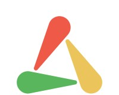

.png)
Socialpoint, Take2
DragonCity - Mobile Game Developer
Feb 2021 - Today
Is a breed and collect mobile game that has been live for 10 years. We work using our propietary C++ game engine that provides core functionality
to the game and uses Cocos2D for rendering.
During my time at DC I've been in different multidisciplinary teams working with UI/UX designers, BE engineers, artists and QA.
The core work as a mobile developer is:
- Designing Code Architecture.
- Coding in C++.
- Releasing versions to all supported platforms.
- Writing feature documentation.
DragonCity - Tech Team Oct 2023 - Today
I got the oportunity to became the squad captain of the Tech Team. A part from my day to day programmer tasks this includes:
-
Managing Squad Meetings:
Ensuring all documentation is prepared before the meeting starts and the responsible of conducting the meetings, which are:
- Daily Stand up.
- Weekly/Monthly Planning.
- Retrospective.
- Team Health check. -
Managing the Backlog:
Making sure we have the tickets prepared for the sprint and everyone knows what we have to do. Also making sure of removing old tickets or keeping them updated as long as they are relevant.
DragonCity - Tech Team Jan 2023 - Sep 2023
Tech Team focus is on stability and projects related with core systems of the game including modifications to the engine itself. As part of this team I was Monitoring Key KPIs and improving them overtime:
Projects I worked on:
The webstore project is the integration of a Dragon City webstore to bypass platform fees which is a standard in the mobile game industry.
The client part of this project was focused on the comunication between the Store, the Game and the Backend. And release a smooth experience to the players which don't need to relogin into the game nor go manually from the
webpage to the game and back.
The key learnings for this projects were:
-
Deeplinking:
Have you ever wondered how tik tok knows to open when you click on the link your partner sends you? Deeplinking is how!
This is a OS feature that allows your app to open specific links. Basically when you install the app this links in the config file are set by the OS and when you try to open one of them is detected and gives priority to your app instead of the browser -
Multithreading:
This was not my first glance at multithreading but it was the first time that it was my fault when it failed.
The good thing was that the multithreading part was not a big deal but was a great practice overall making me wrap my head around race conditions. -
Team Diversity:
At that time we were working with the Webpage team which was in San Francisco, the Take2 team in New York and us in Spain which make a wonderful experience but working hours where such a mess.
A part from the legal, marketing and "Non Dev" teams around the globe.
The IAP Reuse was a pain in the ass project which improved drastically the quality of live of our LiveOps team. Giving them the oportunity to reduce the number of managed IAPs from 400-500 to less than 50.
The key learnings for this projects were:
-
Data Analysis:
God bless the analythics team, hopefully I never have to do their job!
When we were doing the refactor, the analythics team was really helpful providing their needs on how to structurate the data we were sending them for the database so they could read it easier. -
Engine Programming:
A really good things was beeing able to modify and fix bugs in the engine even if there's always a bit of anxiety going on to not break the other games of the company.
In the Tech Team we spend some of the work force to reduce crashes and I was not exception doing this.
A lot of the crashes were straight forward to fix:
- Check the callstack.
- See what is causing the crash.
- Pull the thread until you find why the stupid pointer was nullptr in the first place.
- Fix it.
But there was a special crashs which really help me improve:
-
CURL Crash:
While I was testing I found that in the tutorial, if you were using a proxy, when an HTTPRequest was cancelled sometimes you got a crash.
How we Fixed It:
As it was early in the game, we overwrote the delete operator so everytime the game deallocates memory it was not freed but instead set to a specific value. And then we spend some hours looking at the memory layout of the things we were deallocating until we found that CURL was deleting a block of memory that was previously freed. And yes only happened to us because we are the only ones using a proxy in the game!
I reffer as we because my lead was helping me with this one as he had 30 years of experience doing videogames. But it was very enlightening to me.
-
Helping Liveops Team:
We are always there for our beloved Liveops Team, when they have doubts of how system works, requests to improve things and helping them when they set the game on fire both in dev environments and in production.
-
Bug Fixing:
Another important aspect of the Tech team is fixing bugs and most of them are in the Battle system which has the most spaghetti code of the entire project. But we manage to keep it stable. At Least doesn't crash!
-
Battle System Refactor:
This is MY PERSONAL CRUSADE in the game. Everytime we have to do a new flashy skill for a dragon all the devs are afraid because the code is horrible. The system was not designed for what we are doing now and every new skill makes it worse.
This is kind of a personal project I have inside the game because it's the biggest paint point for us.
The main paint points of the system are:
- To much dependancy between skills.
- Animations not following the order the game logic follows.
- Lack of modularity which has lead to a lot of copy-pasted code between skills.
I designed a new way of doing it but it still has to prove that it works. -
Unified Login Pipeline:
Integrate the login pipeline that the engine team had prepared into the game, create an ABTest to check which is the best configuration and release it to everyone!
DragonCity - Feature Team Feb 2021 - Dec 2022
We use a Model-View-Controller Architecture for all the UI related things, which is most of our daily work except for combat.
Projects I worked on:
This was my first task at Dragon City!
I created a component that can be added to any button in the game so you only need to provide some callbacks and the component will handle the holding functionality.
This was used for example in the feeding dragons which was a nice quality of life improvement.
This is an early game feature which was intended to give some guidance to the players throught available goals which were giving rewards upon completion.
The feature was a small succes which managed to increase early retention for new game users.
Here you can see some screenshots:
This is a feature which intention was to give an RPG component to the dragons.
We did a generic system which allow to create and give perks to the users via json. They are available to read anywhere the player has a dragon and can apply it's effect when needed.
This feature was divided in 3 phases:
-
Breeding Perk
We wanted to try the feature with a less risky approach and we created the perk that give better chance of breeding to the players. It had a positive impact and players wanted to see what else would we deliver.
-
Combat Perks:
This was the most important part, we created 3 new perks for combat, and laid the foundations to the new perks that would be developed in the future for combat
- Damage and Health Perks: Pretty explanatory give you a stat boost.
- Phoenix Perk: This perk was meta-shifting because it revives the dragon that carries it.
Overall it had a positive impact in revenues and in the comunity even if free to play players felt this was to much pay to win. -
Perks CLean Up:
Last phase of the perk system, we prepared everything so any squad could create a perk put it in the json and give it to the players to play. This included standardization on how to create perks and lots of documentation.
Also there are some quality of life for players regarding how much perks they have, find dragons that have perks and better UI to go to the perk screen.

We did a collaboration with The Walking Dead and I was the main developer for the skills of the thematic dragons.
We wanted to do something new and added a new feature to the battle system: Battle Auras.
Battle Auras are effects that are applied to all the team and last an amount of turns, which was something we were lacking in Dragon City.
I embedded the new system into the battle system and wrote the documentation needed to create more in the future.
You can see the bunker skill in the gif below but is basically a shield that reduces the damage from the oponent dragons by X% and avoids critical damage.
We did a small test for new game users to see if they engage with a merge like feature and the result was pretty good even if the feature was 30 seconds - 1 minute long!
Also I created and maintained 2 Tools:
This tool allowed the QA team to create all the content needed to be tested in the external QA rounds with a couple of clicks.
It was a Google Sheets based tool using both the spreadsheet functionality and the google script.
This was a tool that allowed us to test battles easily that came up from a personal iniciative in conjunction with the QA of my squad.
We developed the tool because Dragon City made a shift towards combat and we didn't had a proper way to test battles.
This was a great success because reduced the testing time greatly!.
The tool included:
- 3 vs 3 Battles.
- Select of your team and the enemy team.
- Change dragons stats such as empower or level.
- Add and Remove Perks.
- Change the attacks of the dragons.